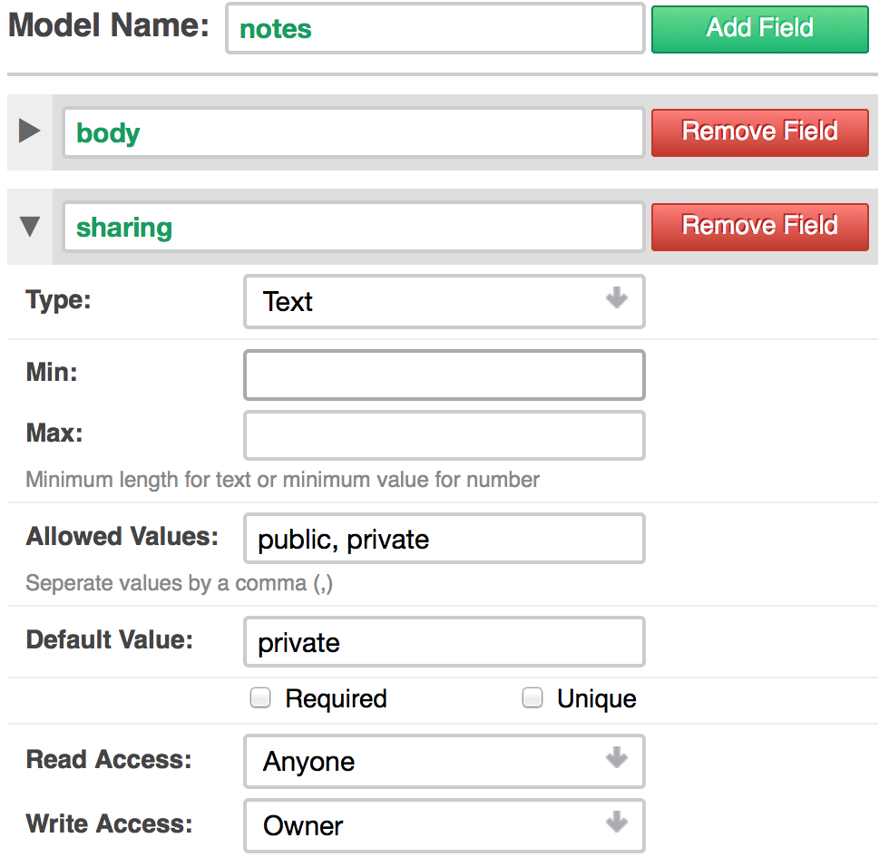
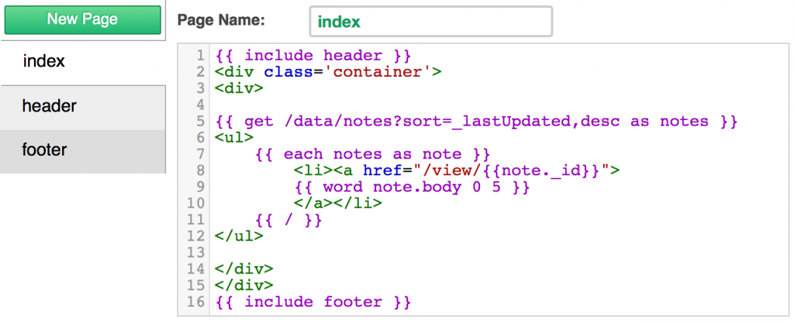
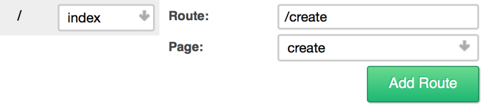
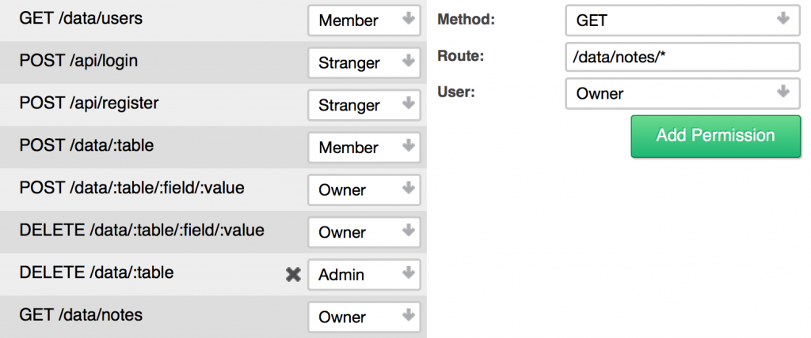
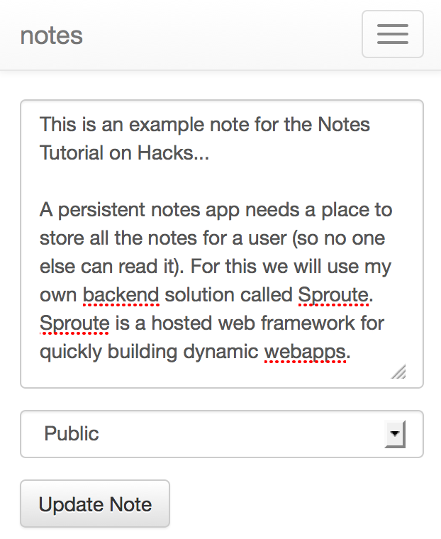

這篇文章將說明筆記 App (就像 Evernote) 從無到有的開發過程，並佈署到 Firefox OS！請先觀看即時展示。
筆記 App 應可讓使用者儲存個人擁有的筆記 (不能任由他人閱讀)。我自己是愛用《Sproute》後端解決方案。Sproute 屬於架設/托管式 (Hosted) 的 Web 框架，可迅速建立動態的 webapps。
首先要用專屬的子網域建立帳號，再從 http://.sproute.io/admin 進入「Dashboard」。往後使用註冊 Sprotue 時的相同資訊即可登入。
模型
Sproute 即使用所謂「模型 (Model)」的概念。模型將定義 App 中的動態資料，並透過某些屬性設定來確保資料的完整性 (Data integrity)。這裡先建立新的模型並命名為「notes」，並有下列欄位與屬性：
- body ：文字、必填欄位、至少需為 1
- sharing ：文字，可為「 public 」與「 private 」；預設值為 private

為「notes」所填寫的模型表格
「body」欄位將儲存筆記內容。「sharing」欄位將指定該筆記是否可讓他人觀看 (將提供直接連結)，或僅限擁有者觀看。開發者只需要定義此項資料，其他都由內建欄位所代勞。
列出筆記
接著要為使用者列出可閱讀的筆記。只要透過「頁面 (Page)」就能達到此目的。所謂的「頁面」都是 HTML 搭配嵌入式的樣板標籤 (Template tag)，可檢索並處理資料。
開啟 index 頁面。這也是他人檢視你的空間時的首頁。我們會把筆記列於此處。接著添增下列：
{{ get /data/notes?sort=_lastUpdated,desc as notes }}
1
{{ get /data/notes?sort=_lastUpdated,desc as notes }}
這裡透過 HTTP 介面檢索所有資料，因此 {{ get }} 標籤必須取得一組網址。上述請求將檢索記錄於使用者之中的所有筆記，另將結果儲存在「notes」變數之中。我們會透過查詢參數，將最後修改過的結果排序 (一組底線即代表一個內建的欄位)。
接著在清單中顯示各個筆記：
<ul>
{{ each notes as note }}
<li><a href="/view/{{note._id}}">
{{ word note.body 0 5 }}
</a></li>
{{ / }}
</ul>
1234567
<ul> {{ each notes as note }} <li><a href="/view/{{note._id}}"> {{ word note.body 0 5 }} </a></li> {{ / }}</ul>
{{ word }} 這個樣板標籤，會擷取主要內容的前五個字出來。我們透過網址 /view/<id>. note 連上未完成的頁面。_id 則為內建的唯一識別碼 (Identifier)。

在「index」頁面中添加上述程式碼
建立筆記
在針對筆記而建立 view 頁面之前，先做一個可建立筆記的新頁面。建立新的頁面並稱之為 create。新增下列 HTML：
<form action="/data/notes?goto=/" method="post">
<div><textarea name="body"></textarea></div>
<div><select name="sharing">
<option value="private">Private</option>
<option value="public">Public</option>
</select></div>
<button type="submit">Create Note</button>
</form>
12345678
<form action="/data/notes?goto=/" method="post"> <div><textarea name="body"></textarea></div> <div><select name="sharing"> <option value="private">Private</option> <option value="public">Public</option> </select></div> <button type="submit">Create Note</button></form>
真簡單！如上面說過的，現在可透過 HTTP 介面檢索並修改所有資料。也就是說，我們可透過簡單的 HTML 表單建立新的筆記。而 goto 這個查詢參數會把使用者重新導向到該網址。
因為這是新的頁面，所以我們應該建立新的路徑，讓使用者能順利存取此頁面。一組 route 即屬於請求網址的一種格式 (pattern)，只要網址的格式符合就隨即描繪頁面。而 index 頁面早已有一組路徑。只要點擊 Routes 就可透過下列方式建立新的路徑：
Route: /create, Page: create.

前往「create」頁面的新路徑
使用者登入與註冊
使用者帳戶均建構至 Sproute 內，但我們仍必須建立「Register and Login」的頁面。還好這裡同樣有簡單 HTML 表單可用，所以就建立一個 users 的新頁面，並新增以下：
<h2>Login</h2>
<form action="/api/login?goto=/" method="post">
<label>
<div>Username:</div>
<input type="text" name="name" />
</label>
<label>
<div>Password:</div>
<input type="password" name="pass" />
</label>
<button type="submit">Login</button>
</form>
123456789101112
<h2>Login</h2><form action="/api/login?goto=/" method="post"> <label> <div>Username:</div> <input type="text" name="name" /> </label> <label> <div>Password:</div> <input type="password" name="pass" /> </label> <button type="submit">Login</button></form>
只要複製登入表單，並將「action」屬性取代為 /api/register，就能在相同頁面上添增註冊表單。另透過下列建立兩組新路徑：
- Route: /login , Page: users
- Route: /register , Page: users
檢視並更新筆記
之前是建立一組連結，以利檢視某一筆記。接著要讓使用者修改筆記。先建立新頁面並稱之為 view，添增下列：
{{ get /data/notes/_id/:params.id?single=true admin as note }}
{{ if note.sharing eq private }}
{{ if note._creator neq :session.user._id }}
{{ error This note is private }}
{{ / }}
{{ / }}
<form action="/data/notes/_id/{{params.id}}?goto=/" method="post">
<div><textarea name="body">{{note.body}}</textarea></div>
<div><select name="sharing">
<option value="private" selected>Private</option>
<option value="public">Public</option>
</select></div>
<button type="submit">Update Note</button>
</form>
12345678910111213141516
{{ get /data/notes/_id/:params.id?single=true admin as note }} {{ if note.sharing eq private }} {{ if note._creator neq :session.user._id }} {{ error This note is private }} {{ / }}{{ / }} <form action="/data/notes/_id/{{params.id}}?goto=/" method="post"> <div><textarea name="body">{{note.body}}</textarea></div> <div><select name="sharing"> <option value="private" selected>Private</option> <option value="public">Public</option> </select></div> <button type="submit">Update Note</button></form>
針對已傳送進網址 (透過 params 物件) 的筆記，我們再透過請求而取得筆記資料。查詢參數 single=true 只會回傳單一物件，而非包含單一物件的集合。admin 另將根據特定的使用者類型而執行請求。接著要檢查此筆記是否為私人筆記。如果使用者並非建立者，就會丟出錯誤訊息。
更新表單可輕鬆建立表單。只要 _id 符合網址中的筆記，我們只需更改 action 以更新該筆記即可。
此頁面需要較複雜的路徑。我們應於路徑中使用替代字串 (placeholder)，讓 /view/anything 仍能符合 view 頁面的路徑格式，並將 anything 儲存於變數之中。
以下可建立路徑：
- Route: /view/:id , Page: view
現在你可知道 params.id 是從哪來的。param 物件將包含路徑中符合替代字串的所有匹配值。
權限
Sproute 最後一個重要概念就是權限 (Permission)。權限就如同路徑，其中有請求的網誌必須符合格式；而並非指向網頁。權限將檢驗必要的使用者類型。
點擊權限並添增下列：
- Method: GET , Route: /data/notes , User: Owner
- Method: GET , Route: /data/notes *, User: Owner
如此可確保系統只會列出特定使用者 (如筆記擁有人) 所建立的筆記。基於第二權限，我們必須執行 {{ get }} 請求為 admin；否則即使是公開筆記，也會對所有人 (除了管理人員與筆記建立者) 丟出錯誤訊息。

新增權限以檢索筆記
Firefox OS 支援情形
Sproute 可於 Firefox OS 上輕鬆支援架設/托管式 (Hosted) App。只要用 manifest 檔案的 JSON 資料建立頁面，並設定路徑為 /manifest.webapp 即可。
建立新頁面並稱之為 manifest：
{
"name": "{{self.name}}",
"description": "A persistent notes app",
"launch_path": "/",
"icons": {
"128": "/absolute/path/to/icon"
}
}
12345678
{ "name": "{{self.name}}", "description": "A persistent notes app", "launch_path": "/", "icons": { "128": "/absolute/path/to/icon" }}
另以 /manifest.webapp 的格式建立路徑，以指向 manifest 頁面。
這樣就完成了！只要在應用程式管理員 (App Manager) 中使用此 manifest 檔案的連結(http://notes.sproute.io/manifest.webapp)，即可進行測試。現已可於 GitHub 上找到開放源碼的《Sproute》，並由 Mozilla Public License v2 授權使用。你可複製整個 repo 供私人架設。
註：你會在「應用程式管理員」看到「manifest」中文翻譯為「安裝資訊檔」。

因行動裝置寬度所呈現的筆記 App